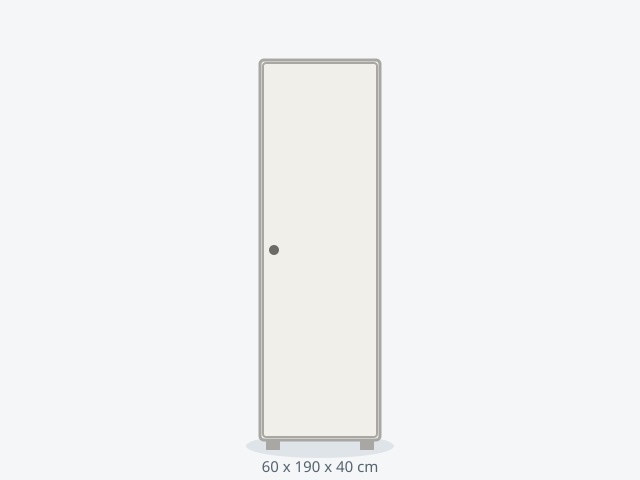

Armario SLIM 60 Auxiliar
Auxiliar de fondo reducido para pasillos y espacios estrechos; no requiere anclaje.
159 €
Entrega 48h · envío en 1-3 días
DisponibilidadEntrega 48h
Dimensiones60 x 190 x 40 cm
ColoresBlanco mate, Gris grafito
Baldas5 baldas
Carga por balda18 kg
Peso total máximo80 kg
MaterialTablero melamínico 16 mm
Puertas1 abatibles
Montaje35 min
Habitación mínima90 cm ancho x 70 cm fondo
Anclaje a paredNo
Stock75 unidades
Consejo de compra: con 40 cm de fondo admite perchas colgadas en paralelo, no perchas estándar de frente.